Каталог
Груши
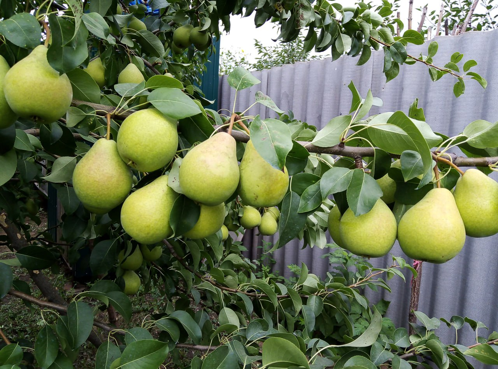
Чижовская
Плоды среднего размера, массой 120–140 г, обратнояйцевидной или грушевидной формы, поверхность гладкая. Основная окраска желто-зеленая. Покровная окраска отсутствует или очень слабо выражена в виде размытого розового румянца, начинает созревать с середины августа. Мякоть светло-желтая или почти белая, среднесочная, полумаслянистая, тающая, слабоароматная, хорошего кисловато-сладкого освежающего вкуса. Сорт зимостойкий, практически самоплодный, вступает в плодоношение на 3-4-й год после прививки.
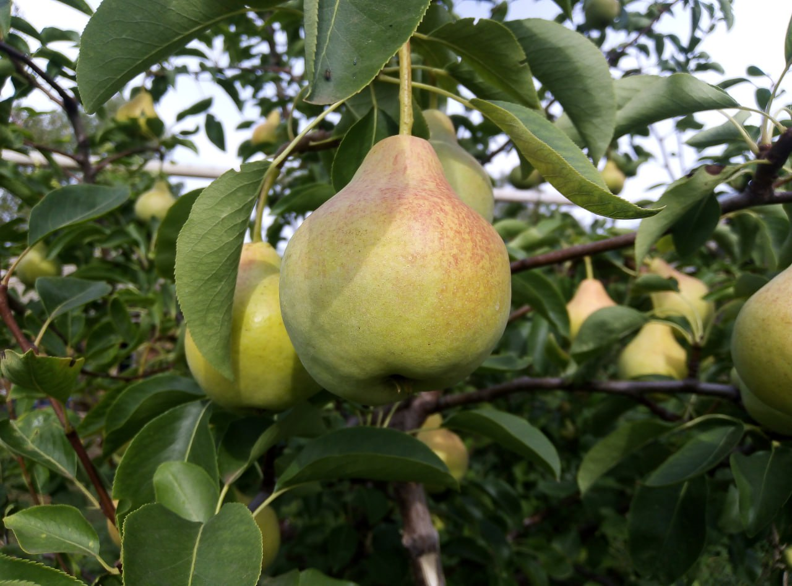
Памяти Яковлева
Дерево небольшое, быстрорастущее, средней густоты, с округлой кроной. Созревает в конце августа, плоды средние, (120-140гр) начинают плодоносить на 3-4-й год после посадки в сад, мякоть плодов кремовая, сочная, сладкая, полумаслянистая.
Яблони
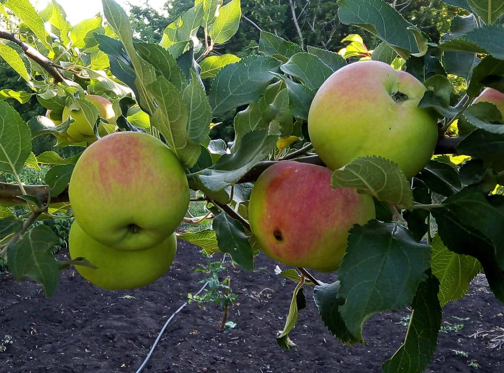
Аксёна
Яблоня Аксёна получила своё название в честь человека, который проводил испытания этой формы на севере Свердловской области (г. Серов) – Василия Матвеевича Аксёнова. Мякоть приятного кремового цвета, мелкозернистой консистенции, довольно плотная, но не очень хрустящая, средней сочности, аромат приятный. Вкус хороший, кисло-сладкий. Вкусовые качества оценивают от 4,3 до 5,0 баллов.
Вес плода средний: 110-130гр. созревает к 20 числам августа
зимостойкость высокая, об этом часто упоминают садоводы. Но если сравнивать с материнской формой (Серебряное копытце), то Аксёна в этом компоненте слегка уступает.
Обладает довольно мощным иммунитетом против основных болезней и вредителей культуры. Особенно ценится за высокую устойчивость к 5-ти расам парши.
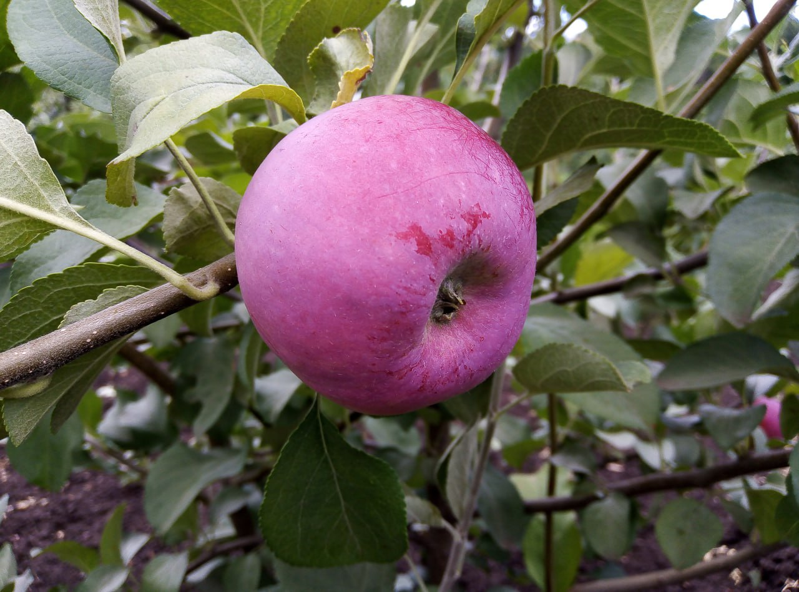
Серебряное копытце
Серебряное копытце — летний сорт яблони, выведенный на Свердловской опытной станции садоводства. Плоды сорта Серебряное копытце одномерные и мельче среднего размера, вес одного яблока обычно равен 80-90 граммам, но иногда может доходить до 100-110 граммов. Мякоть плодов яблони Серебряное копытце имеет достаточно плотную, мелкозернистую структуру и кремовый оттенок. Яблоки очень сочные, отличного кисло-сладкого вкуса,
Если плоды не снять вовремя с деревьев, а оставить висеть чуть дольше, то они становятся настоящими наливными яблоками, оставаясь при этом тяжелыми и приобретая полупрозрачность. Показатели зимостойкости у сорта хорошие. К главным достоинствам яблони Серебряное копытце относят: высокие показатели скороплодности и урожайности.
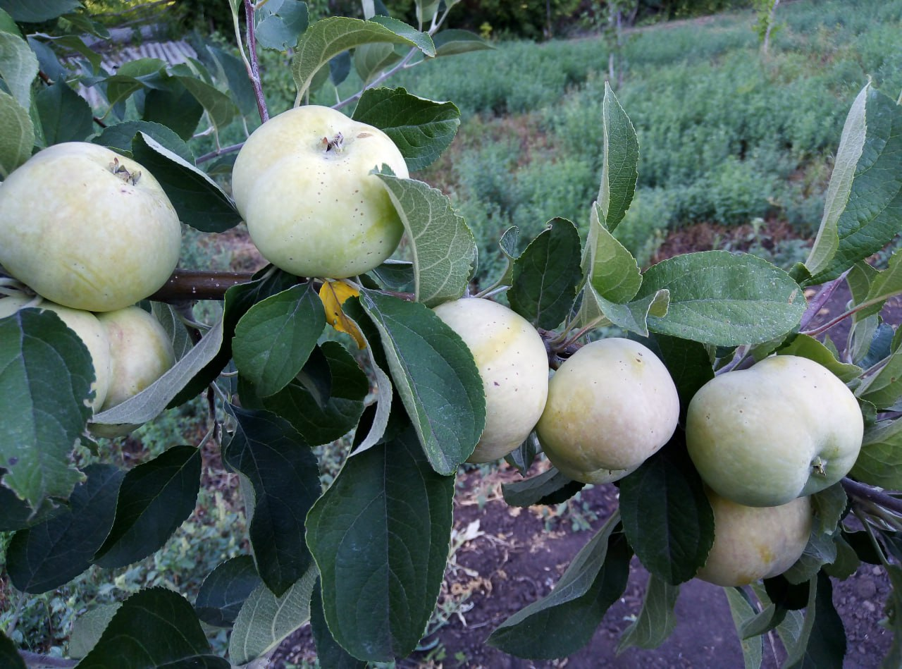
Конфетное
Конфетное относится к группе летних сортов яблони. Это сорт отечественной селекции, созданный во Всесоюзном НИИ им. Мичурина при скрещивания старых русских сортов Коробовка и Папировка. Срок съёма плодов наступает в августе. Плоды среднего размера, обычно 80 — 120 г,
На вкус яблоки очень сладкие со специфическим тонким ароматом. Зимостойкость деревьев довольно высокая.
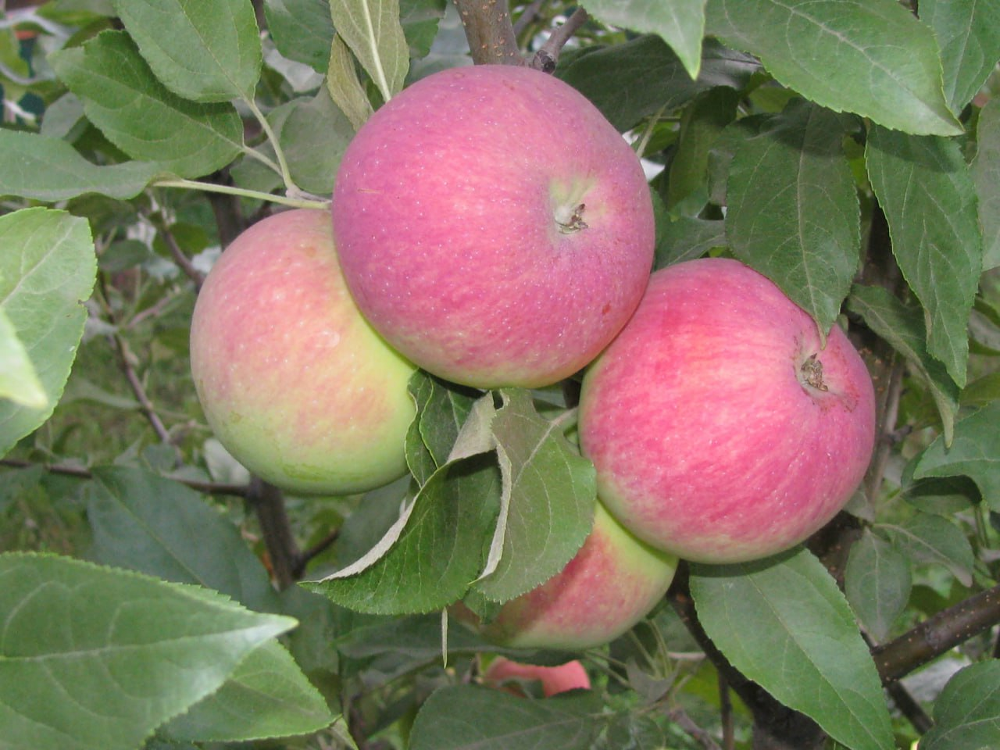
Мантет
Мантет Канадский сорт летнего созревания. Сорт получен на опытной станции в Мордене (Манитоба) в 1928 году путем гибридизации Макинтош(McIntosh) и Tetofsky (так в США и Канаде именовали старинный русский сорт Грушовка московская). Несмотря на некую схожесть с Грушовкой московской, плоды отличаются немного более крупными размерами и лучшими вкусовыми качествами. Плоды этого сорта средней величины, вес одного яблока не превышает 180 грамм.
По вкусу яблоки сорта Мантет довольно сочные, сладкие, кислинка практически не ощущается, с превосходными десертными качествами. Мякоть ароматная, нежная, белого оттенка.
деревья имеют среднюю зимостойкость.
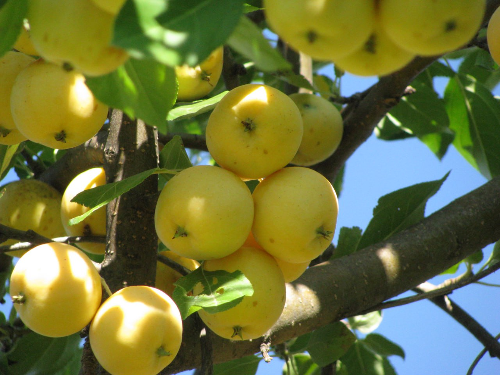
Уральское наливное
Уральское наливное осенний сорт селекции Южно-Уральского научно-исследовательского института плодоовощеводства. Плоды 40-50 г, выравненные, округло-конической формы, слабо ребристые. При созревании не осыпаются. Кожица гладкая, блестящая, желтая. Мякоть, мелкозернистая, сочная. Вкус сладкий, со слабой кислотой и легким ароматом.Сорт идеально подходит для употребления в свежем виде, а также для приготовления компотов и других видов переработки. Зимостойкость повышенная.
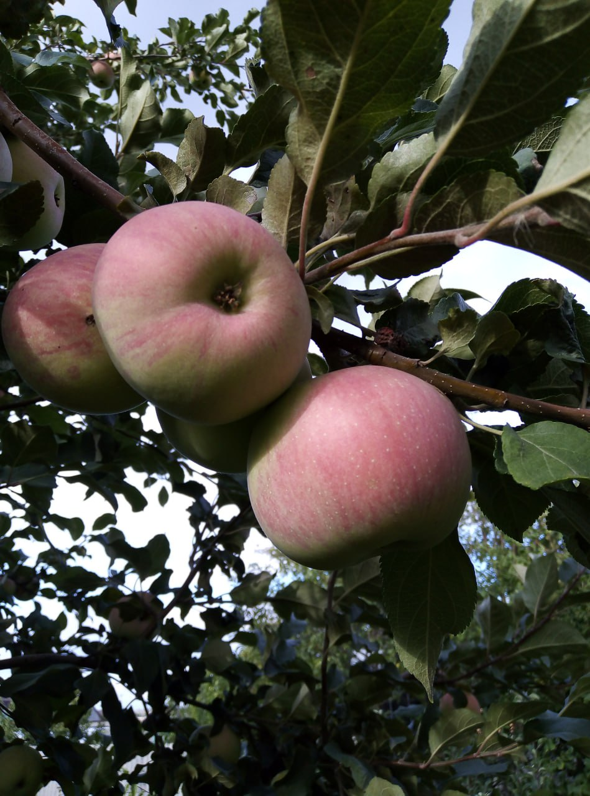
Спартак
Осенний сорт выведен С.П. Кедриным на Самарской опытной станции по садоводству путем отбора среди сеянцев Шаропая посева 1936 года. Плоды средней величины (90–130 г), на молодых деревьях нередко можно встретить плоды массой 300 г. Форма плода плоскоокруглая или округлая. Мякоть кремовая, мелкозернистая, нежная, средней плотности, хорошего кисло-сладкого вкуса, столового назначения.
Съём плодов проводится в первой половине сентября.
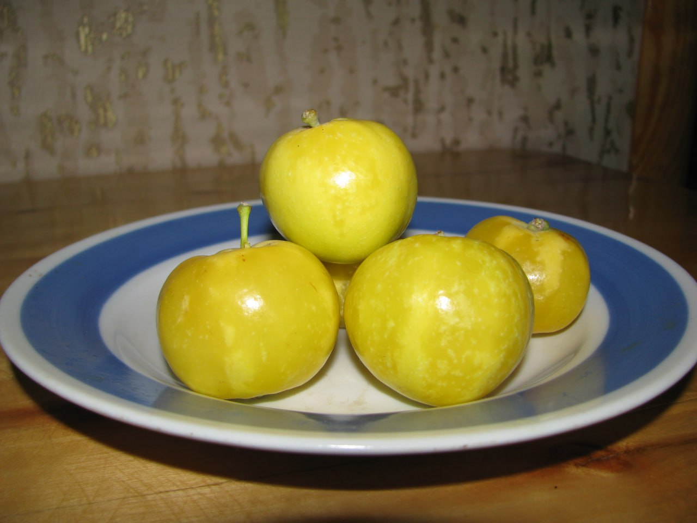
Раннелетний сорт селекции И.В. Мичурина
Получен от гибридизации сортов Налив белый и Китайка. Сорт включен в Госреестр по Северо-Западному и Волго-Вятскому регионам в 1947 году. Плоды мелкие, янтарно-желтые, при созревании часто наливаются. Мякоть плодов желтоватая, хорошего вкуса, кисловатая.
Созревают плоды в конце июля. В течение 5–7 дней после съёма плоды должны быть использованы. Перед созреванием плоды осыпаются.
Сорт высокой зимостойкости и скороплодности.
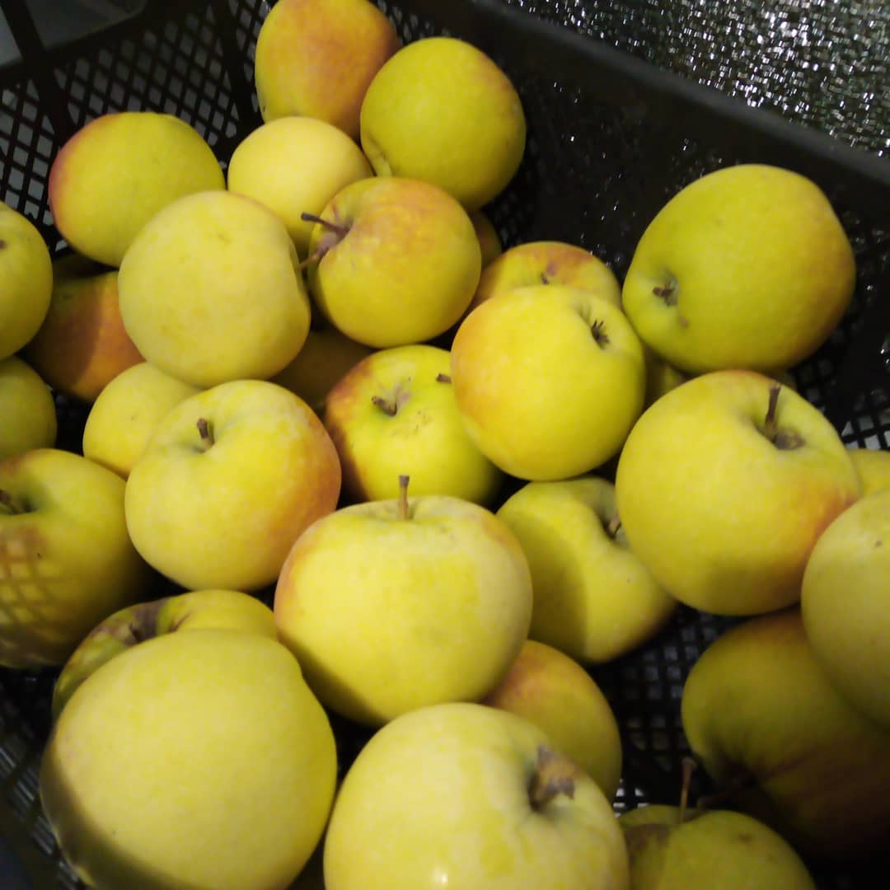
Северный синап
Плоды средней величины (средний вес 120 г), округло-конической формы или стаканчатые. Кожица гладкая, при хранении становится маслянистой. Основная окраска желтовато-зеленая, покровная – в виде буровато-красного румянца на освещенной стороне плода. Мякоть белая или слегка зеленоватая, мелкозернистая, кисловато-сладкая, средней плотности, сочная, освежающая, Плоды обладают высокой лежкоспособностью, потребление лучше начинать к концу декабря так как в это время плоды только начинают набирать вкус. Оптимальная температура хранения 0…+1 °С Сорт достаточно зимостоек.
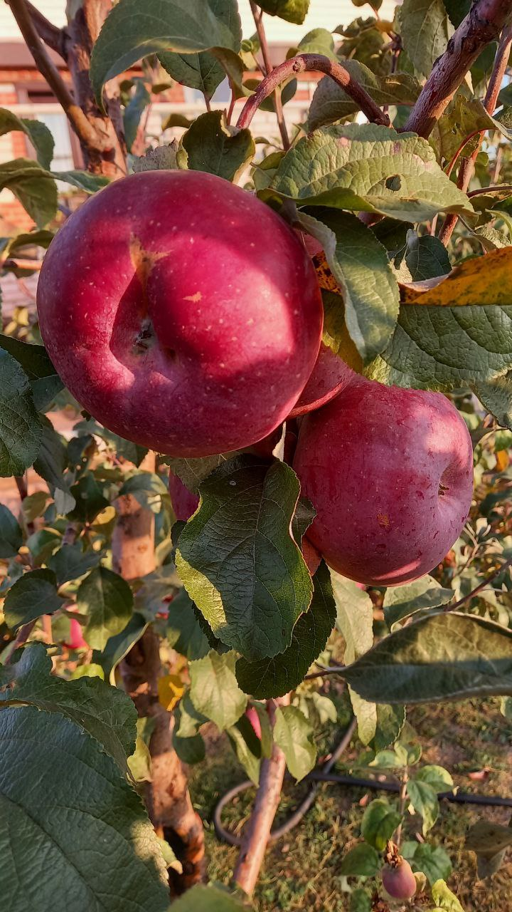
Антей
Позднезимний сорт белорусской селекции. Плоды крупные (200 г), округло-конической слегка плоской формы, Мякоть зеленовато-белая, сочная, мелкозернистая, плотная, со средним ароматом, очень приятного гармоничного кисло-сладкого вкуса. В плодоношение вступает на третий-четвертый год после посадки в сад. Съемная зрелость плодов наступает во второй половине сентября.
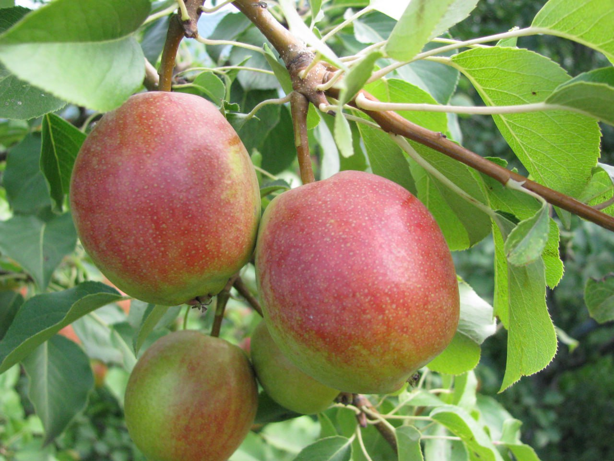
Красуля
Летний сорт, плоды ниже среднего размера, средней массой 90 г, максимальной – до 120 г, средней одномерности, бергамотообразные, округлые. Мякоть плода кремовая, нежная, полумаслянистая, очень сочная и сладкая, отличного вкуса (4,7 балла), с пряностью и средним ароматом. Очень зимостойкий сорт, в плодоношение вступает на 4-5-й год, созревать начинает в первой половине августа.